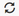

Chalk'it APIs¶
Chalk'it offers a set of APIs through chalkit that serve two primary purposes:
- Scheduler APIs: Facilitate the scheduling process by enabling the modification of dataNode variables and launching the scheduler.
- Dashboard APIs: Support the developpement of multi-dashboard applications and the display of widgets.
chalkit currently operates with JavaScript-type dataNodes.
Scheduler features¶
The main feature allows the setting of dataNode variables in a script, replicating the behavior of a user interacting with a basic input/control widget.
The assessment of these functions is handled at the end of the current scheduling instance.
setVariable¶
chalkit.setVariable(dataNodeName, dataNodeValue);
This API sets the value dataNodeValue to the dataNode identified by dataNode["dataNodeName"].
- dataNodeName: The name of the dataNode, must be a string.
- dataNodeValue: The value to be assigned to the dataNode, which can be any JavaScript primitive type (number, string, boolean), array or JSON.
For example, if you have a dataNode info_person that contains:
{
"name": "John Doe",
"age": "30"
}
To modify it by another JSON value, you can use the following code:
chalkit.setVariable("info_person", {"name": "Jane Doe","age": "25"});
setVariableProperty¶
chalkit.setVariableProperty(dataNodeName, propertyPath, dataNodeValue);
This API allows to modify a specific property within a dataNode (not the entire dataNode). It assigns the value dataNodeValue to the specified property path: dataNode["dataNodeName"].propertyPath.
- dataNodeName: The name of the dataNode, must be a string.
- propertyPath: The path of the dataNode property to be modified, supporting JavaScript primitive types (number, string, boolean), array or JSON.
- dataNodeValue: The value to be set to the dataNode property, can be of any JavaScript primitive type (number, string, boolean), array or JSON.
For example, if you have a dataNode info_address that contains:
{
"name": "personal address",
"address": {
"city": "New York",
"details":{
"street": "123 Main St",
"zipCode": "10001",
"country": "USA"
}
}
}
To update the value of the street property in the nested structure within info_address, you can use the following code:
chalkit.setVariableProperty("info_person", ["address","details","street"], "West 23rd Street");
setVariables¶
chalkit.setVariables(dataNodeNames, dataNodeValues);
This API sets each value dataNodeValues[i] to dataNode["dataNodeNames[i]"], where i:0 .. length-1 of dataNodeNames.
- dataNodeNames: An array containing the names of dataNodes, each as a string.
- dataNodeValues: An array containing the corresponding values for the dataNodes, can be of any JavaScript primitive type (number, string, boolean), array or JSON. This array must match the size of dataNodeNames.
For example, to modify at the same time the previous dataNode info_person and another dataNode info_gender that contains:
{"gender": "male"}
you can use the following code:
chalkit.setVariables(["info_person","info_gender"], [{"name": "Jane Doe","age": "25"},{"gender": "female"}]);
executeDataNode¶
chalkit.executeDataNode(dataNodeName);
This API allows to launch the schedule with the source node identified as dataNodeName (the name of the dataNode that must be a string).
This functionality can be useful for a dataNode with explicit trigger flag set to true. Its execution can be explicitly triggered by this API, in addition to being triggered by an associated push button widget or by clicking on the dataNode update icon  present in the dataNodes list.
executeDataNodes¶
chalkit.executeDataNodes(dataNodeNames);
This API is similar to executeDataNode, except it launches the schedule with multiple source nodes defined in the dataNodeNames array, where each name is represented as a string.
Dashboard features¶
The main feature allow navigation between Chalk'it pages with parameter transfer. When landing at the target page, specified dataNodes of type Variable can have their initial values modified, as described below.
goToPage¶
In constrained dashboard mode, the method:
chalkit.goToPage(pageNumber)
allows to show only the targed page. It is the main method for building multi-page app with custom navigation control.
viewPage¶
chalkit.viewPage(pageUrl, inputVals, bNewTab)
Navigates to pageUrl, setting the values of the specified dataNodes in inputVals.
- pageUrl: target page URL
- inputVals: an array of structures of type
{"dsName": "dataNodeName", "dsVal" : "dataNodeValue"}
dsName should be of type string. dsVal can be of any JavaScript primitive type (number, string, boolean), array or JSON.
- bNewTab: open in new tab when true.
viewProject¶
Similar to view page, but applies for projects.
chalkit.viewProject(projectUrl, inputVals, bNewTab)
hideWidget¶
chalkit.hideWidget(widgetName)
Hides the display of the widget.
- widgetName: the name of the widget, which can be obtained by hovering over the widget target, in the edit mode. The widget is visible by default.
showWidget¶
chalkit.showWidget(widgetName)
Makes the display of the widget visible.
disableWidget¶
chalkit.disableWidget(widgetName)
Disables the access of the widget. The widget is enabled by default.
enableWidget¶
chalkit.enableWidget(widgetName)
Enables the access of the widget (interactive).